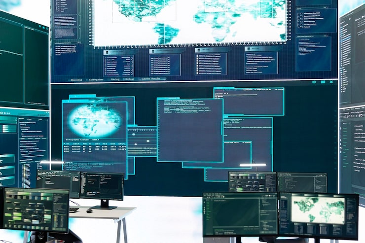

ซอฟต์แวร์และการเขียนโปรแกรม

ซอฟต์แวร์ (Software) คือชุดคำสั่งที่ควบคุมการทำงานของฮาร์ดแวร์ แบ่งเป็นระบบปฏิบัติการ (Operating System) ที่บริหารจัดการทรัพยากรเครื่อง และโปรแกรมประยุกต์ที่ตอบสนองความต้องการของผู้ใช้ การพัฒนาซอฟต์แวร์อาศัยภาษาโปรแกรมมิ่ง เช่น C, Python และ JavaScript ร่วมกับหลักการออกแบบอัลกอริทึม (Algorithm) เพื่อแก้ปัญหาอย่างเป็นระบบ กระบวนการพัฒนาซอฟต์แวร์ (Software Development Life Cycle) ครอบคลุมตั้งแต่การวิเคราะห์ความต้องการ ออกแบบ เขียนโค้ด ทดสอบ ไปจนถึงบำรุงรักษา สำหรับวิศวกรคอมพิวเตอร์ ทักษะนี้ยังใช้ในการเขียนเฟิร์มแวร์ (Firmware) เพื่อควบคุมอุปกรณ์ฮาร์ดแวร์โดยตรงอีกด้วย